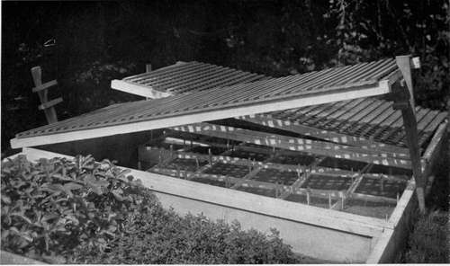
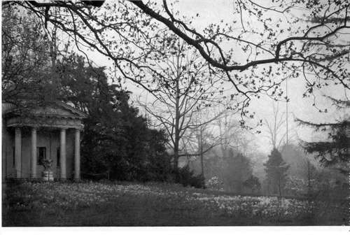
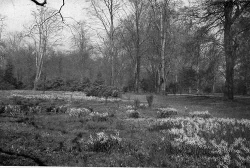

Flowers For Shady Rocks
Description
This section is from the book "What England Can Teach Us About Gardening", by Wilhelm Miller. Also available from Amazon: What England Can Teach Us About Gardening.
Flowers For Shady Rocks
I said that we must make a special study of wild flowers that not merely endure shade but actually need shade and which nevertheless have the alpine charm. Our woods furnish many such, but they are mostly April and May bloomers. I will mention only a few of them, but every one is of exceptional interest in leaf or habit, particularly the Solomon's seal, of which the English are very fond.
Common Names | Scientific Names | Colours | Season |
Hepatica | Hepatica triloba | purple, blue, pink, white | March |
Dutchman's breeches | Dicentra Cucullaria | white, yellow | April |
Dwarf early flag | Iris verna | blue | April |
Solomon's seal | Polygonatum biflorum | greenish | April-May |
Alum root | Heuchera Americana | white | May-June |
Violet wood sorrel | Oxalis violacea | rose-purple | May-June |
Wild blue phlox | Phlox divaricata | blue | May |
False lily-of-the-valley | Maianthemum Canadense white | May | |
Wild spikenard | Smilacina racemosa | white | May-June |
Wood sorrel | Oxalis Acetosella | white | June |
why not have a | rockery? | ||
Rock gardening will probably always be costlier here than in England. True, Englishmen may have to pay as much for rocks as we, but skilled labour costs more here and we must take artificial means to cool the atmosphere. A first-class rockery is a complicated structure because it must provide every kind of exposure, many kinds of soil, a perfect water supply, and perfect drainage. But a good one is worth all it costs.
The great drawback to the rockery is the difficulty of cooling the rocks and atmosphere. The obvious way is to shade the rock garden by means of overhanging trees. Unfortunately, shade is fatal to the finest alpine flowers. Our only hope, I believe, is to use water freely. This is costly, I admit, but there is no use in doing things by halves. We must have plenty of water anyhow, for seven tenths of the art of rock gardening is to give the plants a never-failing supply of moving — not stationary — water. There is an immense amount of talk in English books and papers about lime-lovers and lime-haters, but if we can only get a perfect water supply I believe we can cut out nearly all that pottering with special soils. Witness the best alpine garden in America (Mrs. Higginson's at Manchester, Mass.) where the gardener told me he never put a bit of lime into any compost.
An idea got at the Cambridge Botanical Garden filled me with great hope. The scholarly and ingenious curator, Mr. R. Irwin Lynch, was making a rockery in which the central feature was a well. The paths all lead naturally to this moist, cool spot where a person can get a drink of fresh, cold water and admire the flowers on all sides and above him. The rocks, soil, and air are all pleasantly cool and moist — not damp or sour. The moisture is expected to rise by capillarity through all the stones to the very top, without interfering at all with the quicker downward drainage through the soil.
Mr. William Robinson frowns upon connecting water features with rock gardening and I must confess that most of the lakelets, cascades, etc., which I saw in England in connection with rock gardens were unpleasing or even ludicrous. Yet Mr. Lynch's idea seems adapted to our life in three ways. It has the practical advantage of quenching thirst. It has the cultural advantage of keeping the rocks cool instead of hot. It has the aesthetic advantage of supplying a dramatic conclusion to the whole effort. A well at the lowest point seems natural, and since the highest walls surround it, there is sure to be grateful shade in the heat of the day — a point we Americans appreciate. The heated period of the English day is only three hours or so; with us it is nearer eight.
IT IS ASTONISHING HOW MANY THOUSAND ALPINE PLANTS CAN BE GROWN FROM SEED. THIS OUTFIT OF COLDFRAMES SUPPLIES THE; LARGEST PRIVATE ALPINE GARDEN IN AMERICA — MRS. HIGGINSON's. See page 25.
DAFFODILS NATURALIZED IN AN ENGLISH PARK. THEY ARE AS LONG LIVED AS TREES AND HAVE BEEN KNOWN TO BLOOM EVERY SPRING FOR IOO YEARS WITHOUT CARE. YOU CAN HAVE I,OCX) OF THEM IN YOUR MEADOW OR SHRUBBERY FOR $$ TO #15. SeepagC26t.
THE ARTISTIC WAY TO PLANT DAFFODILS IS TO HAVE SOME LARGE GROUPS, WITH SMALL COLONIES IN THE DIRECTION OF THE PREVAILING WIND, AS IF THE SEED HAD BEEN BORNE THITHER BY THE BREEZE. THIS MAKES THEM LOOK LIKE WILD FLOWERS. Seepage.
A good time to start a rock garden is in June when the spring rush is over and one can attend leisurely to the sowing of seeds. It would bankrupt most of us to buy plants of every alpine species we desire and beside alpines, as a class, do not transplant well from nursery to garden. The favourite plan is to sow seeds in flats in a coldframe any time from June to August, carry the young plants over the winter in the frames and set them outdoors in their permanent quarters in spring. Nearly all will bloom the year after sowing. It is astonishing how many species can be started in a little space. The frames pictured on plate 85 supply the largest private alpine garden in America — Mrs. Higginson's.
The ideal way to propagate alpines is to grow them from seed of your own saving, as it germinates quicker and better than foreign seed. However, the easiest and cheapest way is to start with English or Swiss seed.
There are now about a dozen men who make a living by collecting and growing American plants, and surely they deserve encouragement. There is one in Vermont, one in Massachusetts, and one in New Jersey, from whom almost any Eastern rock plant worth growing can be secured in quantity. Another man has spent a small fortune in educating people to like the hardy flowers of the southern Appalachians. A Coloradan has collected most of the Rocky Mountain flowers worth growing. The mountains near Salt Lake now have their devoted student. The wonderful bulbs of the Pacific coast have been gathered by a great enthusiast. A Georgian has collectors everywhere and offers seeds of all the famous far-Western flowers. And doubtless there are others of whom I have no knowledge.
It may seem that I have wandered from my theme of "English Effects" by speaking so much of American rock plants, but every wild flower mentioned in this article is actually grown in English rock gardens and every one is procurable from English seedsmen or nurserymen — in many cases easier than from our own. In conclusion I think we ought to right about face and show England that we can make rock gardens quite as lovely as hers, and with an American character too, instead of blindly copying every thing she does.
Continue to:
- prev: Delicate Fern Effects
- Table of Contents
- next: Chapter XXI. English Effects With Long Lived Bulbs
Tags
garden, flowers, plants, England, effects, foliage, gardening